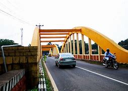
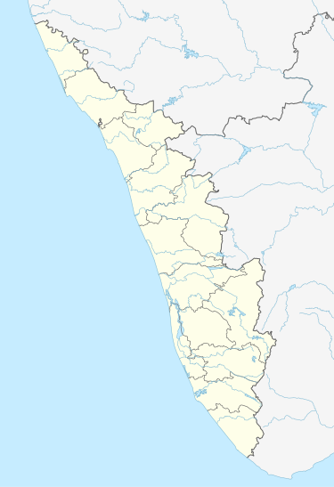

PIRAVOM
CORDINATES 9°51′0″N 76°30′0″E
PIRAVOM
PIRAVOM MUNCIPALITY


- Country : India
- State :Kerala
- Distric :Ernakulam
- City UA :Kochi
Piravom is a municipality in Ernakulam district and a suburb of Kochi in the Indian state of Kerala. It is located with
in 31 km southeast of Kochi city center, at the boundary of the Ernakulam and Kottayam districts. Piravom is famous for
its Hindu temples and Christian churches. Piravom has a river-front, verdant hills, and paddy fields.
HISTORY
Piravom was owned by the Vadakkumkoor Kingdom until it was captured by Travancore kingdom, and is now part of the Indian
state of Kerala.Piravom was reverted to panchayat status in 1992 after two years as a municipality because of skepticism that
its classification
as a municipality would attract higher tax rates and building regulation. However, as modern municipal
councils now have the authorityto fix the tax rate and new building rule provisions are now applicable to
special grade panchayats, the economic
incentive for Piravom remaining
a panchayat has disappeared.
The Kerala state government and the GCDA have plans to incorporate Angamaly, Perumbavoor, Piravom
and Kolenchery in Ernakulam district,
Mala and Kodungallur in Thrissur district, Thalayolaparambu and Vaikom in Kottayam, and Cherthala in Alappuzha
district into the
jurisdiction of the Kochi metropolis.
The newly formed metropolis would be put under the charge of a new authority called
the Kochi Metropolitan Regional Development Authority.
PLACES OF INTEREST
- Pazhoor Padippura is an astrology center linked to Pazhoor Perumthrikkovil located in Piravom is referred
in the Aithihyamala by Kottarathil Sankunni.
- Pazhoor Perumthrikkovil is a temple of Shiva of Hindu tradition located at the town of Piravom. The temple is
believed to be nearly 1,800 years old Pazhoor Perumthrikkovil is also mentioned in Aithihyamala.
- Piravom Valiya Pally is one of the oldest churches in Kerala. It stands on a hilltop on the
eastern bank of the Muvattupuzha River.
EDUCATIONAL INSTITUITIONS
- Government Higher Secondary School, Piravom
- Government Higher Secondary School, Namakuzhy
- M.K.M.H.S.S., Piravom
- Fatima Matha Central School
- St. Joseph's Higher Secondary School
- Holy Kings Public school Piravom
- BPC College Piravom
- MSM ITI, Piravom
- Vivekananda Public School
- Toc H Public School
- Chinmaya Vishwavidyapeeth, a deemed university under the de novo category, Peppathy
- Naipunnya St. Michael's Public School, Veliyanad.
POLITICS
Piravom Assembly Constituency has been incorporated into Kottayam Lok Sabha Constituency, led by Thomas Chazhikadan,
as a part of the
delimitation of parliament seats in India. The assembly was previously part of Muvattupuzha Lok Sabha Constituency
.Anoop Jacob is the MLA
of Piravom assembly constituency.LDF is the ruling front in Piravom municipality. Eliyamma Philip is the Municipal Chairperson of Piravom
Municipality, and K.P Salim former panchayat president of Piravom and M.G. University Senator is the Vice Chairman. Piravom assembly
constituency came into being in 1977. Before that Piravom Municipality was part of Muvattupuzha assembly constituency.
T M Jacob was the first MLA
of Piravom. P C Chacko, Benny Behanan, Gopi Kottamurickal, M J Jacob were the other MLAs. Piravom was part of Muvattupuzha
parliamentary constituency
until 2019. From then, it is part of Kottayam parliamentary constituency. Prof. C Poulose, Umadevi Antharjanam, K P Salim and
Sabu K Jacob were also
Piravom Panchayath Presidents.
TOURIST PLACES